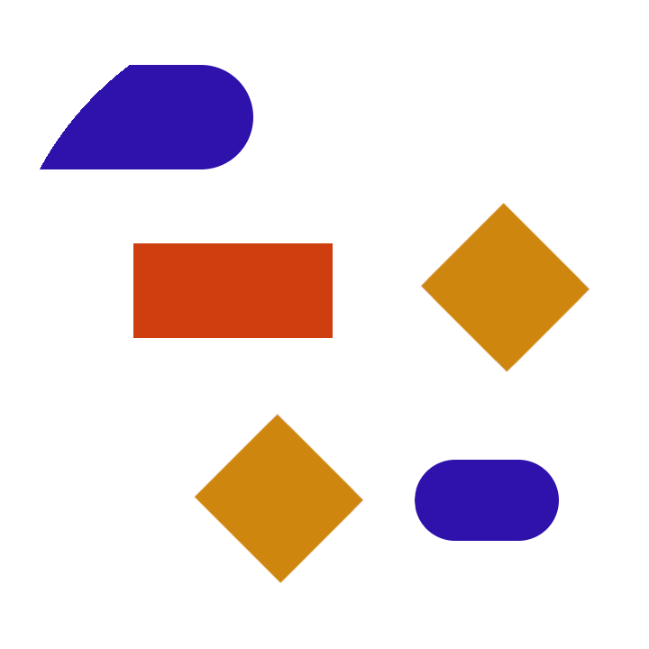

Como foi dito anteriormente, os computadores não entendem as linguagens de programação.
Quando criamos um algoritmo usando essas linguagens, é necessário transformar o código fonte em algo que pode ser compreendido e executado no computador.
Para isso utilizamos os compiladores, quando a linguagem é compilada.
Este converte nosso código em outra linguagem de baixo-nível ou linguagem de máquina.
Em outros casos ele pode converter o código em uma linguagem que será interpretado por uma máquina virtual, como é o caso do JAVA.
Temos ainda as linguagens interpretadas, que não precisam de compilador e são interpretadas passo-a-passo durante a execução.
Podemos citar como exemplo a linguagem JavaScript, que está presente em diversos sites e aplicações.

Resumindo...